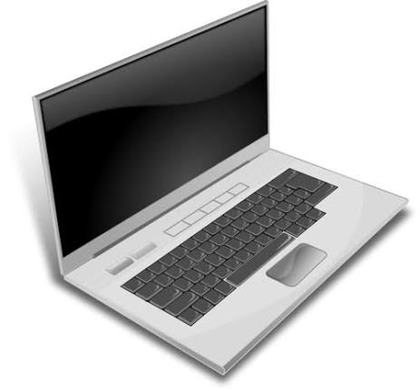

Notebook
AMD Ryzen 5
8GB RAM
512GB SSD
Debian 13
Manter conectado à energia por 6 horas antes do primeiro uso
Selecionar ABNT2 como padrão de teclado
Conectar a uma rede com acesso à internet para login

Notebook
👉 Clique aqui para mais informações sobre o processador AMD Ryzen
Especificações
Processador
RAM
Armazenamento
Sistema Operacional
AMD Ryzen 5
8GB
512GB SSD
Debian 13
Notebook básico para uso diário e estudos